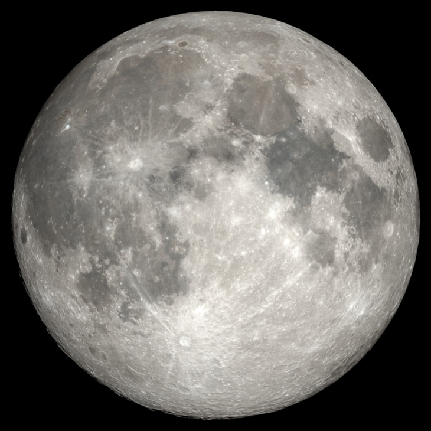

Hover to identify · Click to open the geological map
Near Side — 44 Quadrangles · 1:1,000,000 Scale · Color Geological Maps

Hover to identify · Click to open the geological map
Click the map to open the full-size image in a new tab